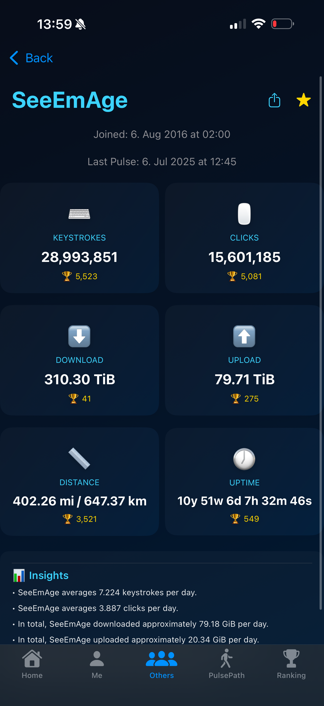
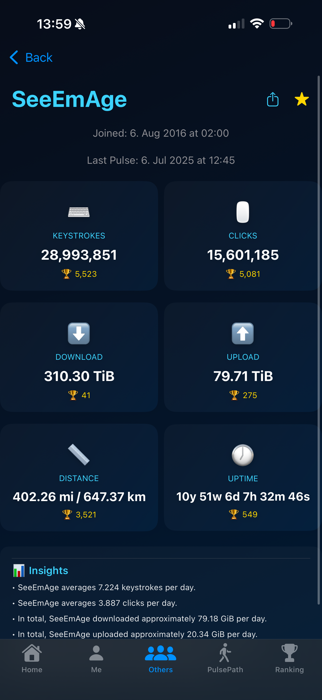
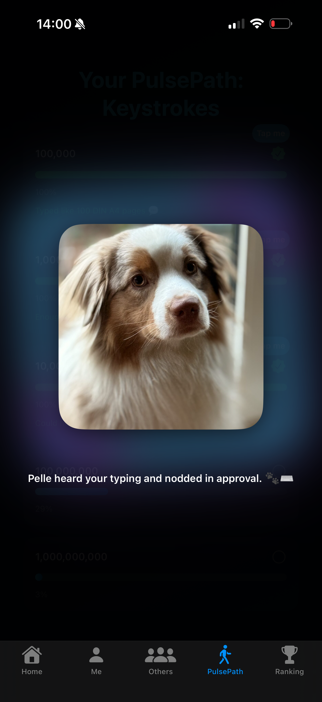
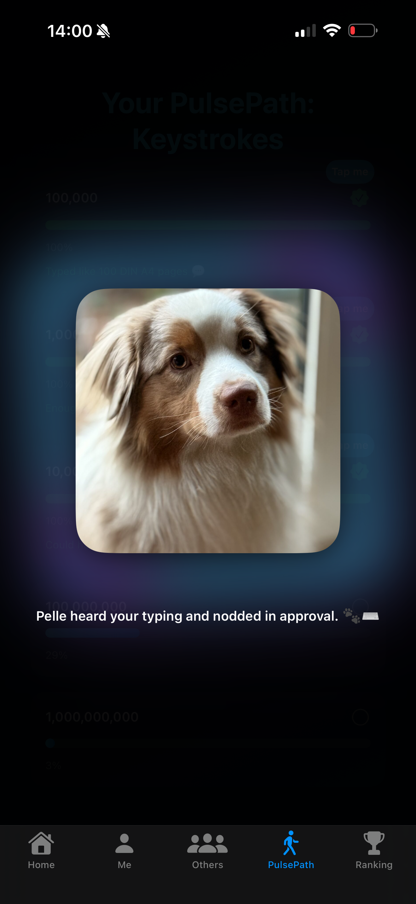

PulseView
A beautifully crafted fanmade companion app for WhatPulse.
Track your keystrokes, clicks, bandwidth and uptime – from anywhere.
WhatPulse is a desktop application that measures your keyboard and mouse usage, bandwidth, and system uptime.
Learn more at whatpulse.org.
Download for iPhone & Apple Watch
Download for Apple TV
📱 iPhone Screenshots
 


 


⌚ Apple Watch Screenshots
The Watch app is included with the iOS version – no separate download needed.
📺 Apple TV Screenshots


🌟 Platform Features
Why is PulseView free?
PulseView will be free forever 🙂 It's a passion project built with care and love.
I don’t want money from it – your positive feedback is more than enough 💜
If you like the app, I’d be grateful for a short review in the App Store 😉
Translations may come in the future – for now, everything is hardcoded in English.